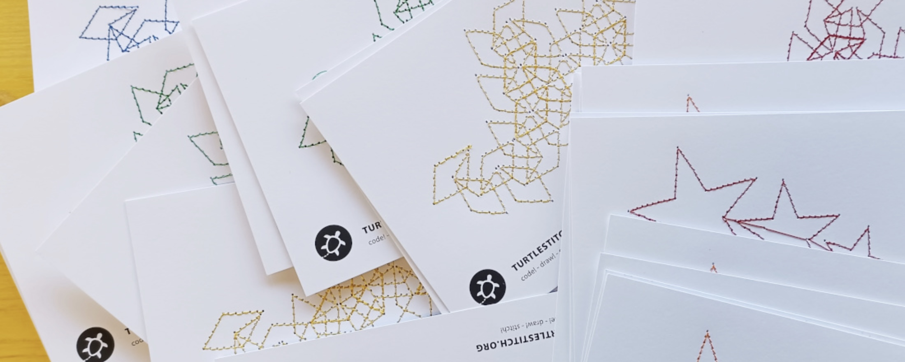
Turtlestitch 10
We celebrate 10 years of Turtlestitching around the globe.
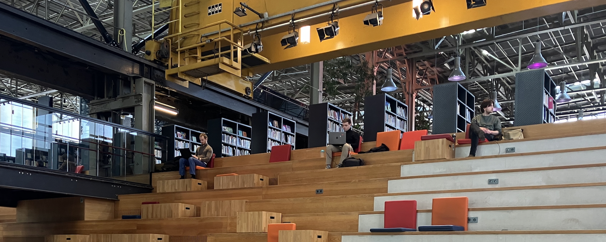
Tilburg
Event will be hosted at LocHal Tilburg and include visit to famous Textilemuseum
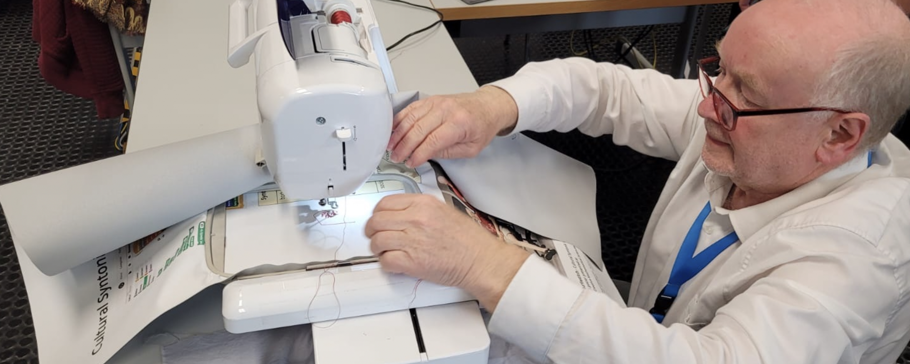
Program
For two days there will be parallel tracks of talks and workshops.
Turtlestitch 10 Fest
July 18-20, 2025
Happy birthday Turtlestitch! Ten years after Andrea Mayr first presented Turtlestitch with a masterclass in Amsterdam, there are many reasons to celebrate. Over the last ten years, Turtlestitch has won the hearts of children, artists and educators around the world. Part of the community has gathered at conferences for Turtlestich's roots, Scratch and Snap! Celebrating a decade of Turtlestitch will give many more people the opportunity to join and share. The venue will be LocHal, Tilburg, The Netherlands, an innovative public library, situated next to the well connected Tilburg Centraal station. The former locomotive sheds have been redeveloped into a great cultural hotspot, offering rooms for both talks and workshops. Turtlestitch creates a highly motivational opportunity for learners of all ages to explore computer programming while designing digital embroideries - a great opportunity for local coding clubs to embrace new ways to engage with digital tools that are creative, artistic and educational.
Education
TurtleStitch as a grand grand child of Logo has strong connection with learning and education. In schools as well in informal educational settings TurtleStitch is used to engage learners of all ages. Embroidery is a very welcoming environment to introduce ideas on coding, math and making.
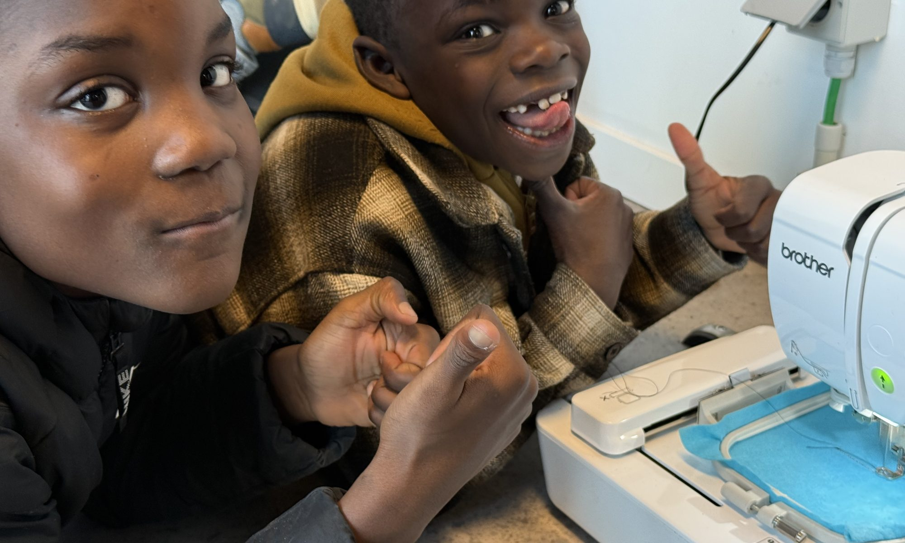
Art
TurtleStitch is a playful workspace to explore many patterns. Keep experimenting till your aesthetic idea is drawn, after which exporting to digital embroidery machine will make your work tactile.
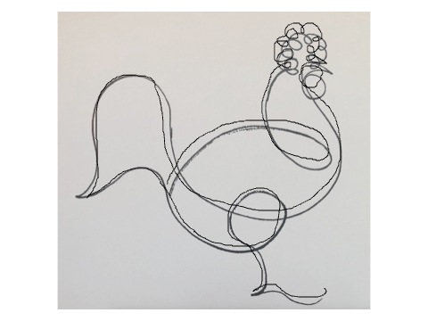
Culture
Embroidery is used around the world to express ideas and tell stories. So are mathematical patterns. Combining the two in environment where you can play with code deepen insights in the cultures surrounding us.
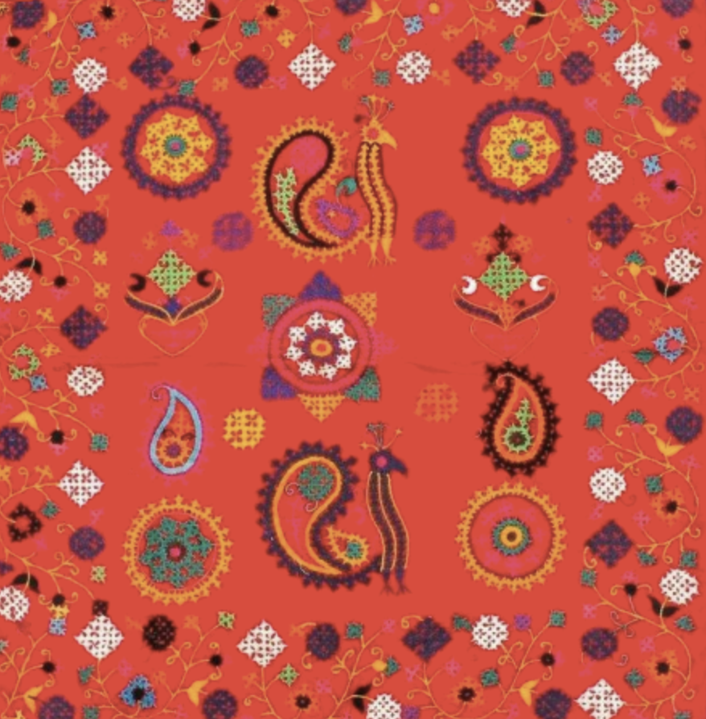
Join us!
Turtlestitch 10 is not just a celebration — it's a community gathering. We're inviting artists, educators, developers, and makers to contribute to the event by leading a workshop, giving a talk, or sharing a hands-on demo. Whether you're exploring Turtlestitch from a creative, educational, or technical perspective, we'd love to hear from you. Please use our application form for proposals.
TurtleStitch 10 is an open event which can be enjoyed for free. We do, however have the option for a paid registration. Select which of the following roles describes you best and follow the link.
Contributor
If you want present your work, lead a workshop, or contribute in other ways: send us your proposal via the button below, we assume you will participate in person and will charge €50.>
Contribution form
Participant
If you want to see the demonstrations, attend the talks and side events, participate (or even help) in workshops, please register. We will invite you to pay the registration fee of € 50.
Registration form
Visitor
If you or your children just want to attend part of the program, participate in a workshop we will ask you to register for free via the website of LocHal. You can drop us a line that you want to hear from us once the program gets shape.
Email us
Workshops, talks, and ideas welcome
Workshop proposals
Heart of the fest will be free workshops for all. Which means we have a continuous Getting Started workshop, and invite you to organize on top of that.
Talks and demos on the beauty and joy of TurtleStitching
Please share your TurtleStitch adventures with learning, coding and making with.
Talks and demos on future of TurtleStitch
An open source software project offered for free to the world can't be run without many volunteers and sponsors. To make sure TurtleStitch will stay available for future learners we have to make plans on managing the project. If you have ideas on how to organize community website, support pages, please present them to get
Participating artists and teachers
Workshops and talks
Turtlestitch has a global community of vibrant and supportive educators, so we're happy to announce that the following people have confirmed particpation. We're especially proud that Cynthia Solomon, co-inventor of Logo, author of seminal article Twenty things tot do with a computer (1971) and co-author of recent follow up TurtleStitching will join us.
Andrea Mayr-Stalder
Andrea is the founder of Turtlestitch. Previously she has worked on numerous artistic and educational internet projects since the late 1990s. She is an artist and media developer with many years of experience in developing open source software for children and adults. She currently works for the Vienna University Children's office, where she develops media use programmes for children and young people and implements innovative media education concepts.
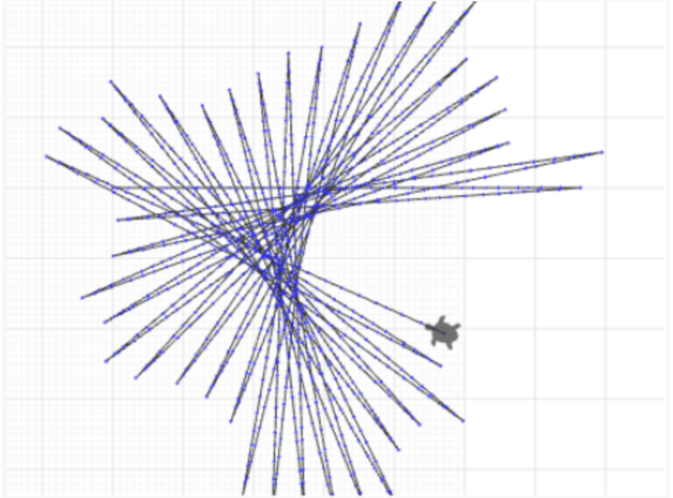
Cynthia Solomon
Cynthia is an American computer scientist known for her pioneering work in popularizing computer science for students as an innovator in the fields of computer science and educational computing. She realized the need for a programming language that was more accessible and understandable for children and collaborated with Seympur Papert and Wally Feurzig to develop the programming language Logo in 1967. An important feature of Logo was the use of 'turtle graphics' - making a robot turtle create drawings through simple movements, and this has informed the way in which Turtlestitch drives the embroidery machine.
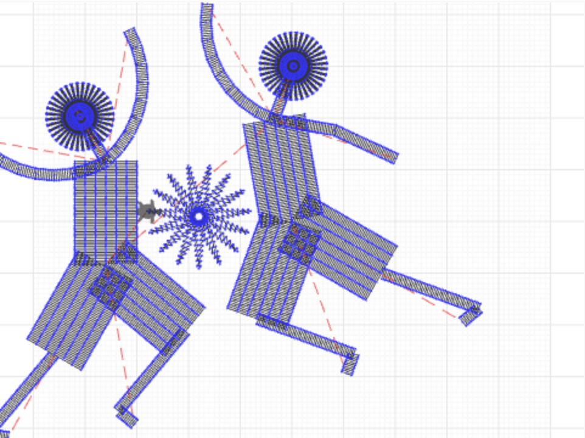
Margaret Minsky
Margaret creates multimedia artifacts exploring learning, improvisation, and thought. She is a professor in the Interactive Media and Business program at NYU Shanghai and a Visiting Researcher (Professor) in Computation and Media at Kyoto University. Margaret's recent investigations are in Craft Computing (creating experiential environments supporting e-Textiles, embroidery, and pleating with computing) which is why she is interested in Turtlestitch.
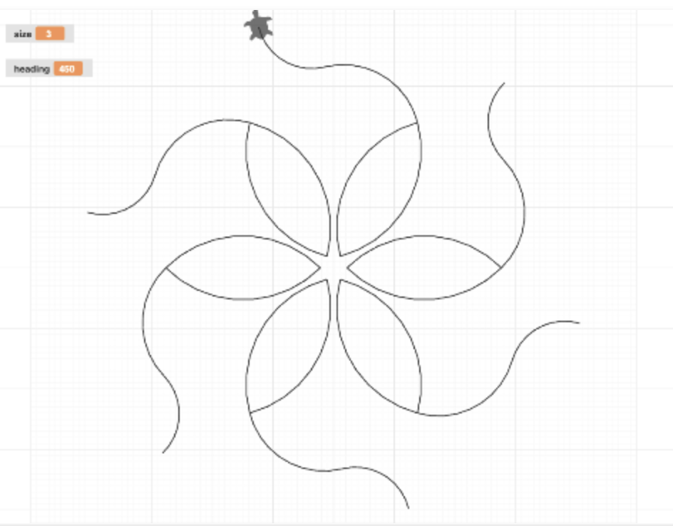
Simon Mong
Simon is a Chineses computer scientist who teaches programming through 'ASTEM' projects - Arts, Science, Technology, Engineering and Mathematics. He is a proud supporter and innovator in Turtlestitch and its parent language Snap!
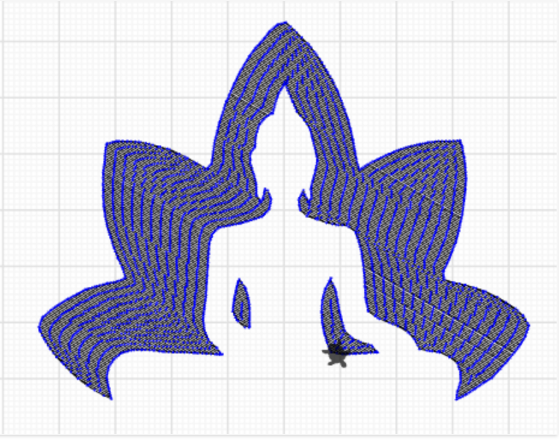
Richard Millwood
Richard is an educational designer based in the School of Computer Science and Statistics at Trinity College Dublin who has recently returned to teaching programming, recognising the huge value in making artefacts as a powerful force for learning. At the same time, he has enjoyed making very personal art using Turtlestitch, combining the abstractions in mathematics and the craft of sewing.
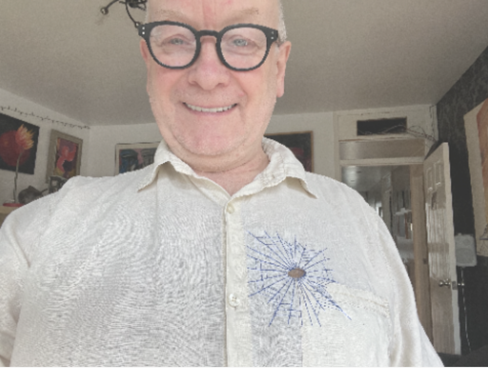
Jadga Huegle
Originally a biologist, Jadga discovered her interest in computer science while building a small connected greenhouse. Since then, she has become an enthusiast and is eager to share her excitement with everyone. She works for SAP's Snap! team and has created new and exciting projects in Turtlestitch.
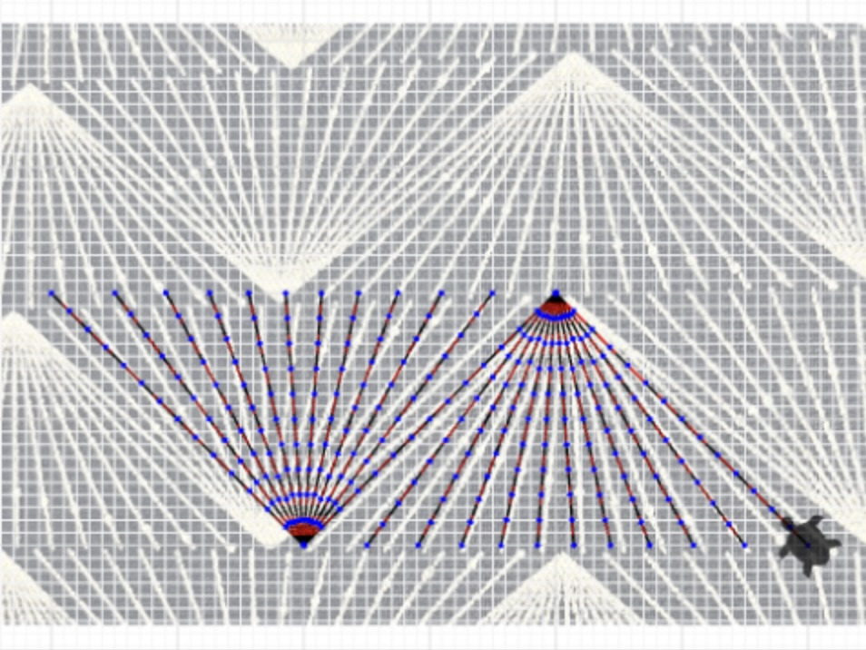
Mags Amond
Former Science teacher, Mags is an enthusiast for open education and a practitioner with materials from knitting to embroidery. An ambassador for the Computers in Education Society of Ireland, she is an enthusiast for the way Turtlestitch excites all ages and genders.
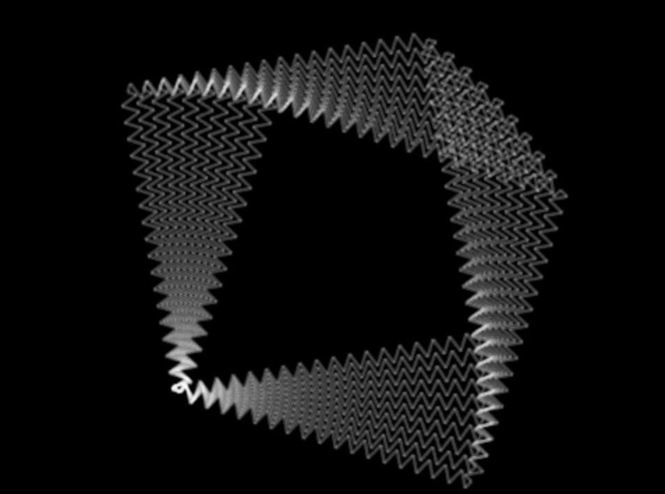
Margaret Low
Margaret is a professor and Director of Outreach and Widening Participation in the Warwick Manufacturing Group (WMG) at Warwick University England. She has used Turtlestitch extensively to bring learners into the discourse around art, design and making.
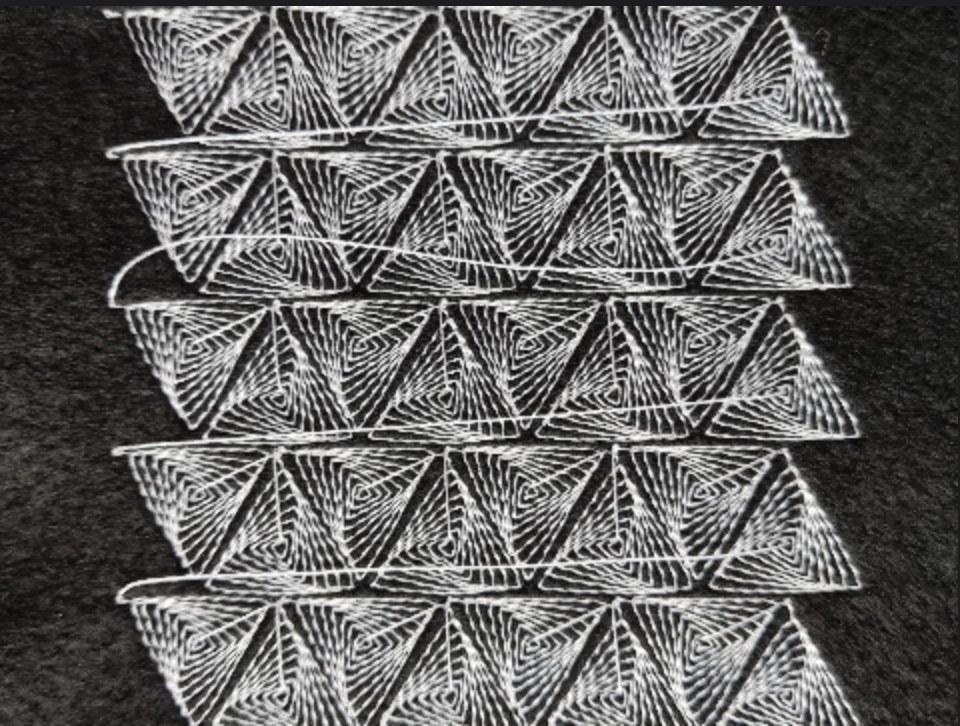
Robert Low
Robert is a mathematician at Warwick University, who has recognised the value in putting theoretical mathematical ideas into practice by making embroideries with Turtlestitch.
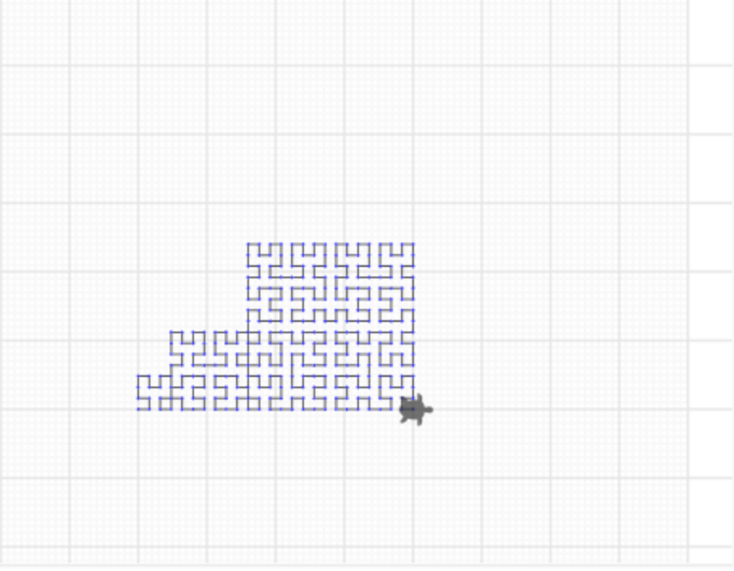
Susan Ettenheim
Susan is an innovative educator, technologist and artist empowering learners at the High School of Fashion Industries in New York, USA. SHe has brought Turtlestitch into her practice of mixing analog and digital worlds and teaching computer science through the arts, data science, visual art and digital media.
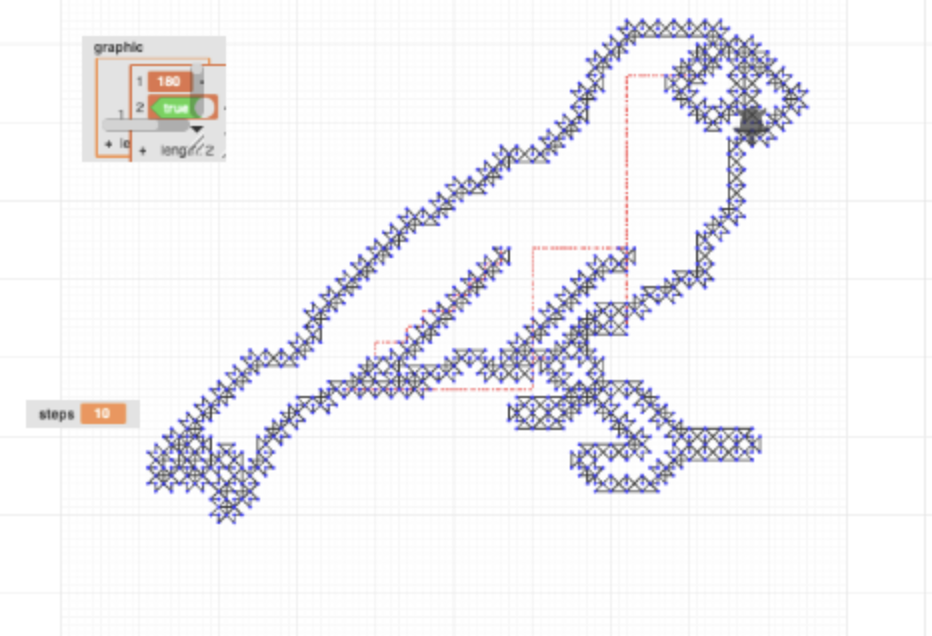
Pauline Maas
Pauline Maas is an educator and ICT expert who founded 4PIP to bring technology and coding into schools, aiming to inspire and train more female teachers in tech. She’s the author of several books on coding for children and serves as the EU Coding Ambassador, organizing CodeWeek in the Netherlands. Passionate about inclusive education, she teaches visually impaired students and co-runs microbit101.nl.
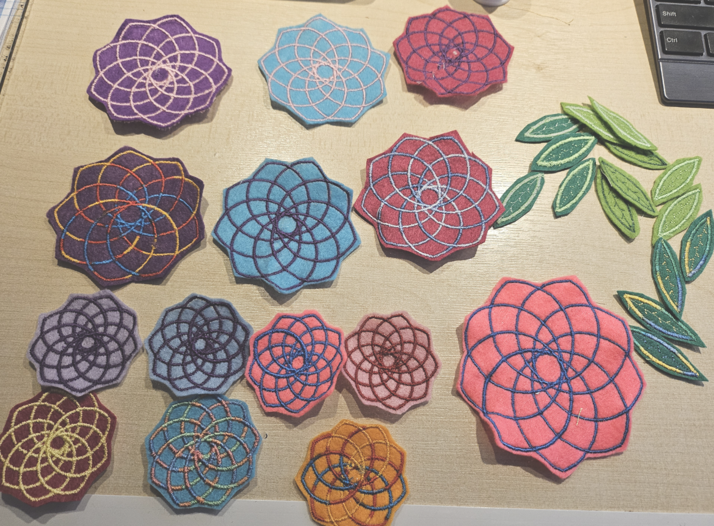
Program
Turtlestitch 10 start Friday night 18:00 informally
Friday July 18
We encourage you to come in time and use the afternoon for a visit to the excellent Textile Museum with impressive Textile Lab
At 18:00 hours we will have an opening reception at the LocHal: a few short talks in an informal setting.
Saturday July 19
On Saturday the day is packed with talks and workshops at LocHal. After dinner we'll have a teachmeet.
Sunday July 20
On Sunday Library hours are 12:00 till 17:00, which allows for plenty of talks and workshops. After cleaning up we're in for a goodbye dinner.
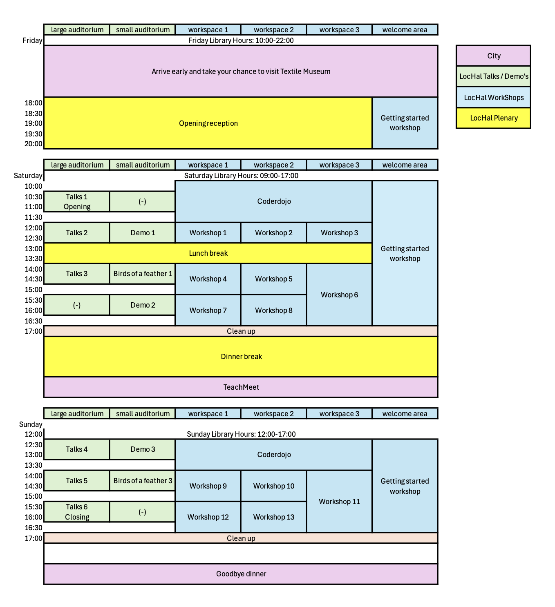
Practical information
Getting there
Tilburg has very good rail connections, plan your journey on NS.nl. If you have difficulty finding a good place to stay in Tilburg, surrounding cities like Breda and Den Bosch are nice and convenient alternatives.
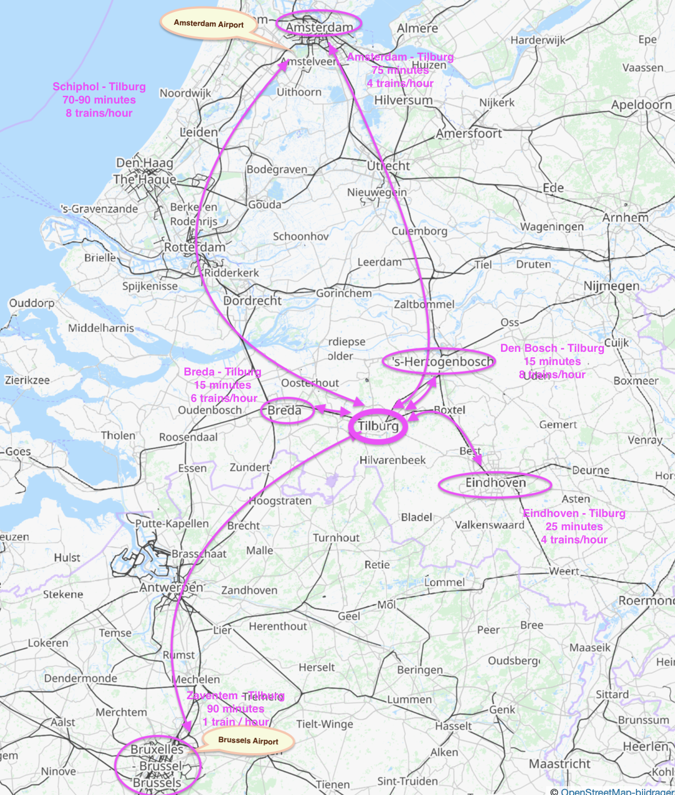
Getting around
Almost all activities are in the LocHal building which is just a few minutes from the northern exit of Tilburg Central Railway station. It may be good to know that during our conference there's a mega event a few blocks west: Tilburg Kermis. This event attracts more than a million visitors ...
Our event takes place in the LocHal building, just a short walk from city will be celebrating the start of the Tilburg Kermis, a major fair happening a few blocks away. While the city center may feel busier than usual, we look forward to enjoying the vibrant atmosphere — without it getting in the way of our gathering at LocHal.
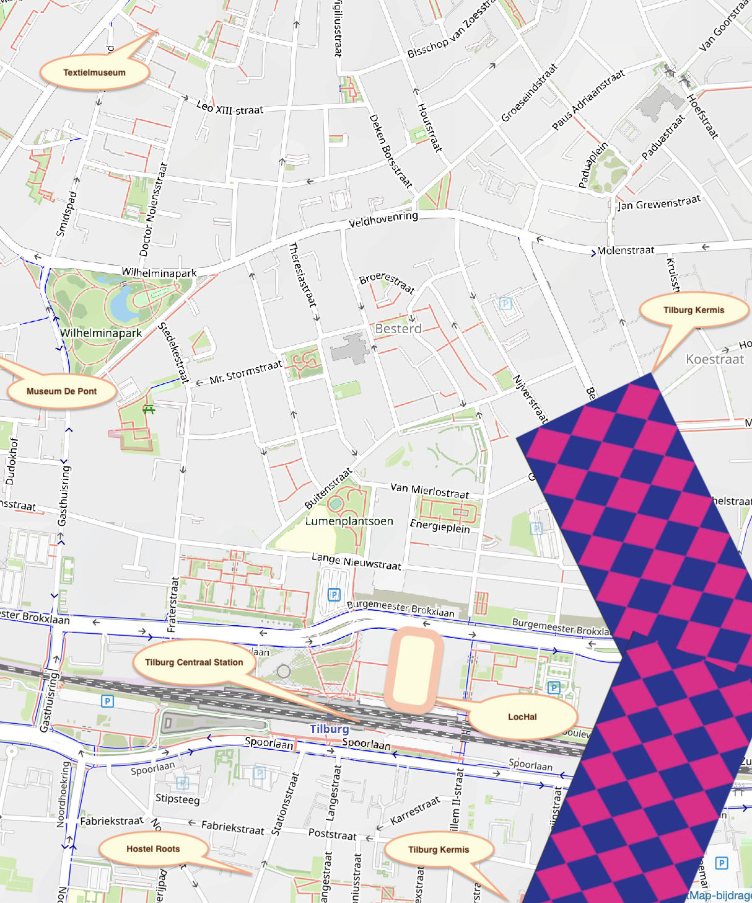
Partners
TurtleStitch 10 is organised by Stichting Scratchweb with the help of partners.
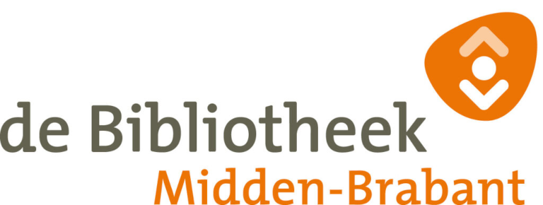
Public Library Tilburg
The library will demonstrate its commitment to testing, creating, exhibiting and presenting the latest innovations through this event which will introduce an exciting synthesis between programming, digital media and craft to participants.
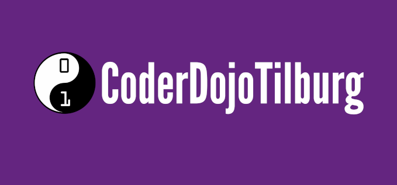
Coderdojo Tilburg
CoderDojo is an open source, volunteer-set movement that stands for sustaining free, non-profit development clubs and regular sessions for young people to learn to program, build websites, develop apps, create programs, make games and more. Turtlestitch's motivational connection with craft through embroidery provides an excellent context to fulfil its aims.
Scratchweb Foundation
This Dutch organisation aims to promote computer science and robotics education in the Netherlands - Turtlestitch with its programming of a robotic embroidery machine is a perfect match to its ideals.
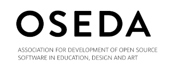
Oseda.org
The nonprofit organization Oseda.org supports the TurtleStitch web platform and promotes creative, educational uses of open-source tools that connect coding with textile arts.
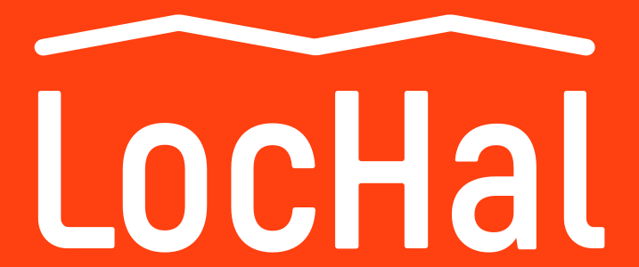
Lochal
The LocHal was formerly a locomotive workshop. Nowadays, it is a driving force for innovation, co-creation and knowledge sharing. Innovation is its main goal and thresholds remains as low as possible: anyone can participate. The LocHal stimulates the drive for creation and innovation through activities in six thematic labs. Step into these inspiring, thematic workshops. Share your knowledge and skills, full steam ahead.

Children University Vienna
The Vienna University Children's Office hosts the ongoing development of the TurtleStitch platform and coordinates local activities in AT, including educational programs, events, and outreach.
§